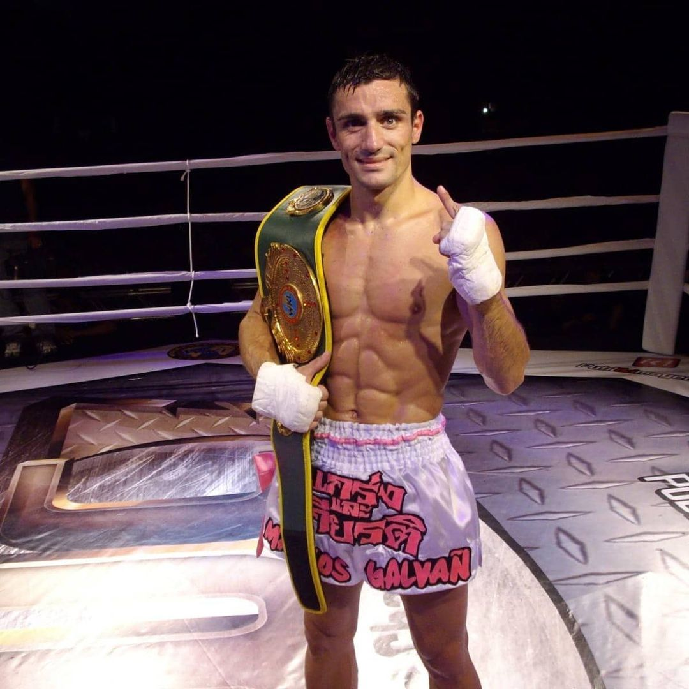
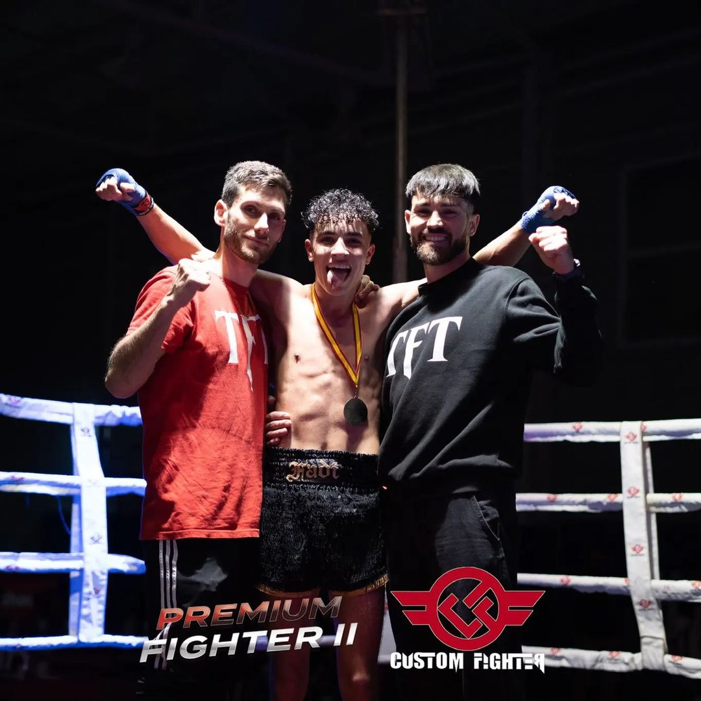
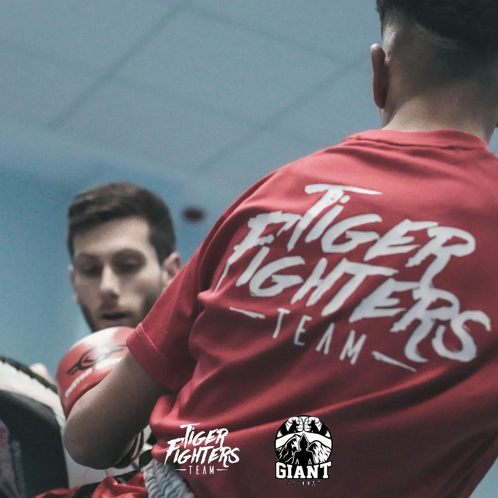
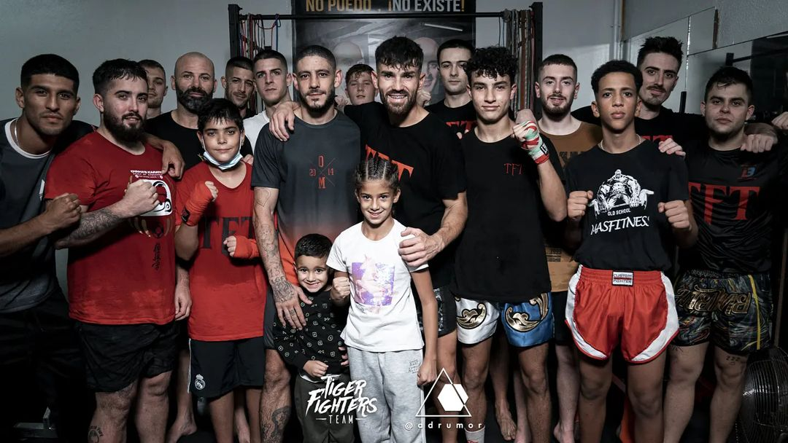
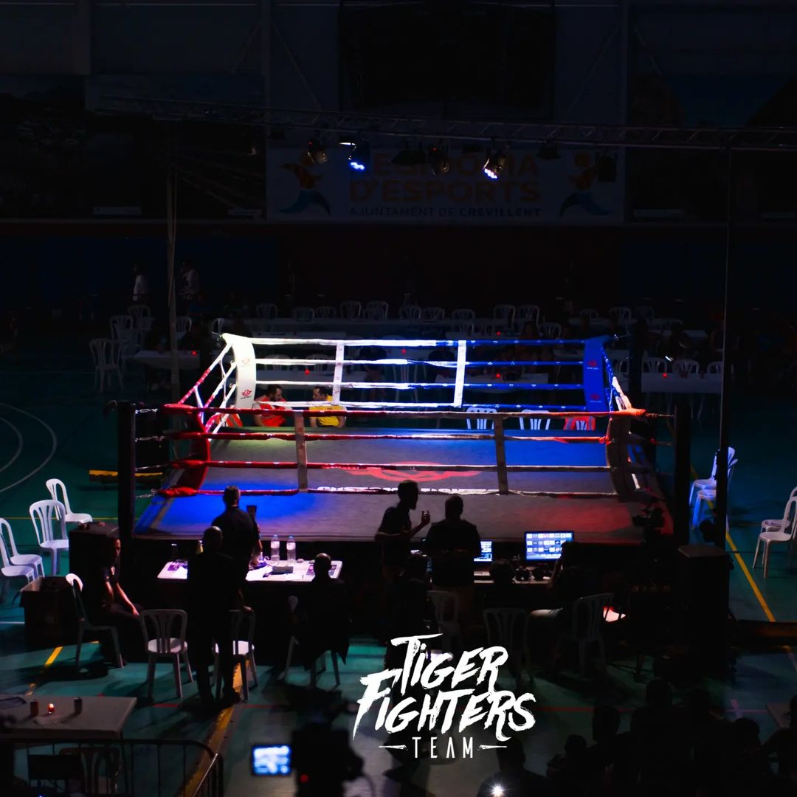

Comenzado por Marcos Galvañ
Tiger Fighters Team fue fundado por Marcos Galvañ, que llegó a ser campeón del mundo de Muay Thai. Creó el equipo con el objetivo de entrenar y promocionar a luchadores prometedores en este deporte.
Entrenador de Ivan Ballester
Uno de los protegidos de Galvañ fue Iván Ballester, que llegó a organizar más de 15 combates bajo la bandera del Tiger Fighters Team. Ballester también se convirtió en un luchador de gran éxito, gracias en parte a los consejos de Galvañ.
Entrenador de Juanjo Granda
Otro luchador entrenado por Tiger Fighters Team fue Juanjo Granda, que ha ganado tres veces el campeonato de España profesional. Ballester fue el entrenador de Granda, y el éxito de sus alumnos es un testimonio de la calidad del entrenamiento proporcionado por Tiger Fighters Team.
Expansión del Club
Hoy en día, Tiger Fighters Team se ha expandido más allá de sus orígenes para convertirse en un club prominente que ofrece clases en varios gimnasios de toda España. El equipo ha seguido participando en eventos y competiciones de alto nivel, mostrando la habilidad y dedicación de sus luchadores.
Éxito continuo
Con una base sólida en las enseñanzas de Marcos Galvañ y un compromiso con la excelencia, Tiger Fighters Team ha seguido produciendo luchadores de éxito y promoviendo el deporte del Muay Thai en toda España y más allá. El legado del equipo sirve de inspiración tanto para los luchadores como para los aficionados.
